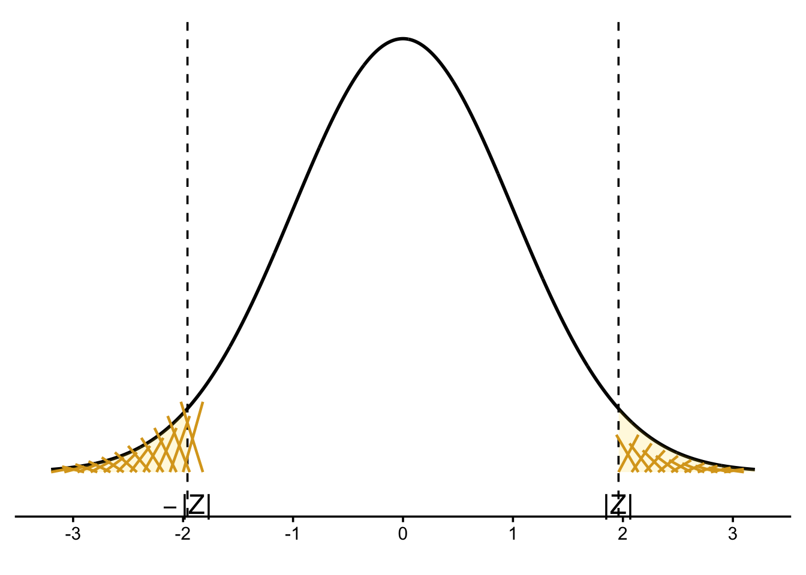
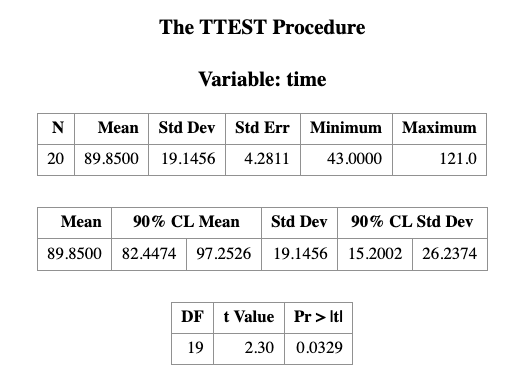

5 Introduction to Statistical Inference I
Learning Objectives
- Be familar with the difference about a probability problem and a statistical problem
- Applied the one sample t-test to do inference for one sample mean problem
5.1 Probability versus Statistics
In probability, we assume that random variables
\(X_1, \ldots, X_n\) follow a distribution with known parameters.
Under this model, we can calculate probabilities of events of interest.In statistics, although we still use a distribution to model
\(X_1, \ldots, X_n\), the parameters of the distribution are assumed to be unknown.
Our primary goal is to use observed data, the realization
\(X_1 = x_1, \ldots, X_n = x_n\)—to make inference about these unknown parameters.
There are three common goals of statistical inference:
- Point estimation
- Interval estimation
- Hypothesis testing
Note
Note that there may be multiple valid methods for achieving each goal, even when working with the same dataset.
5.2 Example: One-Sample Mean Problem
The term one sample does not mean that there is only one observation. Instead, it means that there is one population under study.
In this problem, we are interested in making inference about the population mean, denoted by \(\mu\).
5.2.1 Problem Formulation
Suppose we want to conduct statistical inference on the mean length of a certain type of court case. Let \[ \mu = \text{the mean length of a certain type of court case}. \]
However, the true value of \(\mu\) is unknown because we cannot observe all realizations of this process. As a result, statistical inference is required.
If \(\mu\) were known, no inference would be necessary. What we can do in practice is to collect data. Suppose we randomly select 20 court cases of the same type from historical records and observe their case lengths (in days):
\[ 43,\; 90,\; 84,\; 87,\; 116,\; 95,\; 86,\; 99,\; 93,\; 92, \] \[ 121,\; 71,\; 66,\; 98,\; 79,\; 102,\; 60,\; 112,\; 105,\; 98. \]
From a statistical perspective, these observed values are treated as realizations of random variables. Specifically, we denote
\[ X_1 = 43,\; X_2 = 90,\; \ldots,\; X_{20} = 98. \]
To model the data, we assume that the random variables \[ X_1, X_2, \ldots, X_{20} \] are independent and identically distributed according to a normal distribution with mean \(\mu\) and variance \(\sigma^2\), that is,
\[ X_i \stackrel{\text{i.i.d.}}{\sim} N(\mu, \sigma^2), \qquad i = 1, \ldots, 20. \]
Here, both \(\mu\) and \(\sigma^2\) are unknown parameters. In this example, our primary interest lies in estimating the population mean \(\mu\), while the variance \(\sigma^2\) is treated as a nuisance parameter.
We can use the maximum likelihood estimator (MLE) or the method of moments estimator (MME) to construct a point estimator of \(\mu\). Under this model, however, they are coincide. The resulting estimator is the sample mean, denoted by
\[ \hat{\mu} = \bar{X}_{20}, \]
where
\[ \bar{X}_{20} = \frac{1}{20} \sum_{i=1}^{20} X_i. \]
Under the assumed model, we may use either the maximum likelihood estimator or the method of moments to construct a point estimator for the population mean \(\mu\). In this model, both methods lead to the same estimator: the sample mean. We denote this estimator by
\[ \hat{\mu} = \bar{X}_n. \]
Pay careful attention to the notation. We use a capital letter \(\bar{X}_n\) to emphasize that the estimator itself is a random variable. Since the estimator is a function of the random variables \(X_1, \ldots, X_n\), it is also random and therefore follows a probability distribution. The probability distribution of an estimator is called its sampling distribution. We will return to the concept of sampling distributions later in the course.
5.2.2 Formal Definitions
To be more precise, we introduce the following definitions.
A statistic is any function of the random variables \(X_1, \ldots, X_n\). Because it is a function of random variables, a statistic is itself a random variable and therefore has a probability distribution. If we use the parametric model to describe it, then there is a distribution that depends on the unknown parameters.
A (point) estimator of a parameter \(\theta\), denoted by \(\hat{\theta}\), is a statistic used to estimate \(\theta\). (Note, an estimator is a random variable because it is a statistics).
A (point) estimate is the numerical value obtained by evaluating the estimator using the observed data \(x_1, \ldots, x_n\). In particular, we use lowercase notation to indicate an estimate. For example, \(\bar{x}_n\) denotes the observed value of the estimator \(\bar{X}_n\).
So far, we have constructed a point estimator (and hence a point estimate). To construct a confidence interval or perform hypothesis testing, we need to know the sampling distribution of the estimator \(\bar{X}_n\).
Under the normal model with unknown variance, the sampling distribution can be expressed as
\[ \frac{\bar{X} - \mu}{S / \sqrt{n}} \sim t_{n-1}, \]
where
\[ S = \sqrt{\frac{\sum_{i=1}^n (X_i - \bar{X})^2}{n - 1}}, \]
and \(t_{n-1}\) denotes the Student’s \(t\) distribution with \(n - 1\) degrees of freedom.
5.2.3 Confidence Interval for \(\mu\)
Based on this sampling distribution, a \((1 - \alpha) \times 100\%\) confidence interval for \(\mu\) is given by
\[ \left[ \bar{X} - t_{n-1,\alpha/2} \frac{S}{\sqrt{n}}, \; \bar{X} + t_{n-1,\alpha/2} \frac{S}{\sqrt{n}} \right]. \]
5.2.4 Hypothesis Testing for \(\mu\)
Using the same sampling distribution, we can conduct one of the following hypothesis tests:
Two-sided test \[ H_0: \mu = \mu_0 \quad \text{vs.} \quad H_1: \mu \neq \mu_0 \]
Left-tailed test \[ H_0: \mu = \mu_0 \quad \text{vs.} \quad H_1: \mu < \mu_0 \]
Right-tailed test \[ H_0: \mu = \mu_0 \quad \text{vs.} \quad H_1: \mu > \mu_0 \]
In some textbooks, equivalent hypotheses are written as
\[ H_0: \mu = \mu_0 \quad \text{vs.} \quad H_1: \mu \neq \mu_0 \]
\[ H_0: \mu \ge \mu_0 \quad \text{vs.} \quad H_1: \mu < \mu_0 \]
\[ H_0: \mu \le \mu_0 \quad \text{vs.} \quad H_1: \mu > \mu_0 \]
Fortunately, SAS can perform point estimation, confidence interval construction, and hypothesis testing simultaneously, provided we clearly specify:
The statistical question
(one-sample mean, one-sample variance, two-sample problem, etc.)The inferential goal
(point estimation, confidence interval, hypothesis testing)The statistical model and method
(for example, why we use the \(t\) distribution for the one-sample mean problem instead of the normal distribution or another alternative)
One of the main goals of this course is to help you build a mental “library” of statistical tools. Later, when you encounter a statistical question, you will be able to identify an appropriate method and then use SAS to obtain numerical results for interpretation.
5.3 Revisit the data example by using SAS
The court length data can be read by the following DATA step:
DATA TIME;
INPUT TIME @@;
DATALINES;
43 90 84 87 116 95 86 99 93 92
121 71 66 98 79 102 60 112 105 98
;
RUN;The only variable in the DATA set, time, is assumed to be normally distributed. The trailing at signs (@@) indicate that there is more than one observation on a line. The following statements invoke PROC TTEST for a one-sample t test:
PROC TTEST H0=80 PLOTS(SHOWH0) SIDES=2 ALPHA=0.1;
VAR TIME;
RUN;- THE VAR statement indicates that the time variable is being studies
- the H0= option specifies that the mean of the time variable should be compared to the null value rather than the default value of 0
- the PLOTS(SHOWH0) option requests that this null value be displayed on all relevant graphs
- the SIDE=2 option specifies that a the focus of the research question, namely whether the mean count case length is not equal to 80days, rather than greater or less than 80 days (in which case you would use the SIDE=L or SIDE=U options, respectively)
- the ALPHA=0.1 option requests 90% confidence interval rather than the default 95% confidence interval
The output is presented in the table below.

Note
Some SAS procedures produce graphs as automatically as they produce tables if the ODS GRAPHICS option is used. The graphs are integrated with tables in the ODS output.
ODS GRAPHICS ON;
PROC TTEST H0=80 PLOTS(SHOWH0) SIDES=U ALPHA=0.1;
VAR TIME;
RUN;
ODS GRAPHICS OFF;you will see the following results which include the same table you see in the last figure but with two more figures. We will talk those two Figures in the following classes, especially the QQ plot.


5.4 More about hypothesis and confidence intervals
5.4.1 How to construct a confidence interval?
Consider a 95% confidence interval for the population mean \(\mu\). Under the normal approximation (or by the Central Limit Theorem), we have
\[ P(-1.96 < Z < 1.96) \approx 0.95, \]
where \(Z\) is a standard normal random variable.
Equivalently, this can be written as
\[ P\left( -1.96 < \frac{\bar{X} - \mu}{\sigma / \sqrt{n}} < 1.96 \right) \approx 0.95. \]
5.4.2 Rearranging the Inequality
Rearranging the terms inside the probability statement yields
\[ P\left( \bar{X} - 1.96 \frac{\sigma}{\sqrt{n}} < \mu < \bar{X} + 1.96 \frac{\sigma}{\sqrt{n}} \right) \approx 0.95. \]
5.4.3 Large-Sample Confidence Interval
Thus, a large-sample 95% confidence interval for \(\mu\) is given by
\[ \left[ \bar{X} - 1.96 \frac{\sigma}{\sqrt{n}}, \; \bar{X} + 1.96 \frac{\sigma}{\sqrt{n}} \right]. \]
More compactly, we often write this interval as
\[ \bar{X} \pm 1.96 \frac{\sigma}{\sqrt{n}}. \]
5.5 3.2 Hypothesis Testing and Confidence Intervals Always Agree
5.5.1 Interpretation of the \(p\)-value
The \(p\)-value is the probability of observing data at least as favorable to the alternative hypothesis \(H_A\) as the data actually observed, assuming the null hypothesis \(H_0\) is true.
In this example, the observed sample mean is either greater than \(3.56\) or less than \(3.18\), and the null hypothesis assumes the true population mean is \(\mu = 3.37\).
5.5.2 Computing the \(p\)-value
We compute the \(p\)-value as
\[ P(\bar{X} > 3.56 \text{ or } \bar{X} < 3.18 \mid \mu = 3.37). \]
This can be written as the sum of two tail probabilities:
\[ P(\bar{X} > 3.56 \mid \mu = 3.37) + P(\bar{X} < 3.18 \mid \mu = 3.37). \]
Standardizing using the normal distribution yields
\[ P\left( Z > \frac{3.56 - 3.37}{0.31 / \sqrt{147}} \right) + P\left( Z < \frac{3.18 - 3.37}{0.31 / \sqrt{147}} \right). \]
Evaluating the standardized values gives
\[ P(Z > 7.43) + P(Z < -7.43). \]
This probability is extremely small:
\[ 10^{-13} \approx 0. \]
5.5.3 Connection to Confidence Intervals
Because the \(p\)-value is essentially zero, we strongly reject \(H_0\) at any reasonable significance level.
Equivalently, the hypothesized value \(\mu = 3.37\) does not lie inside the corresponding confidence interval for \(\mu\).
This illustrates a key principle:
Hypothesis testing and confidence intervals always lead to the same conclusion when they are constructed at compatible significance levels.